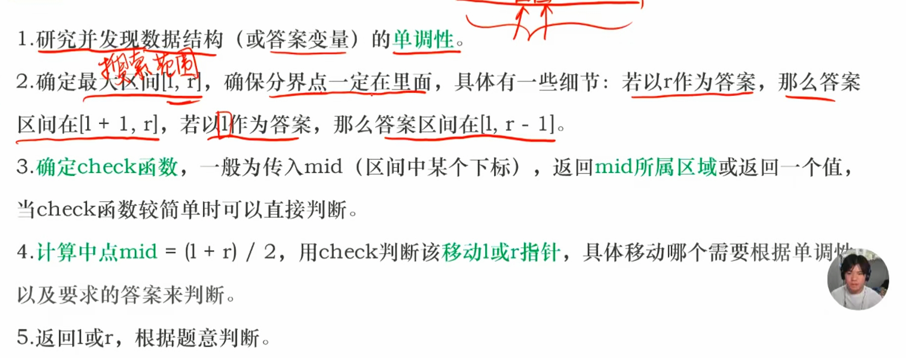
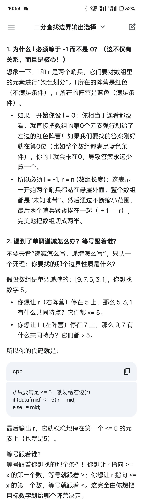
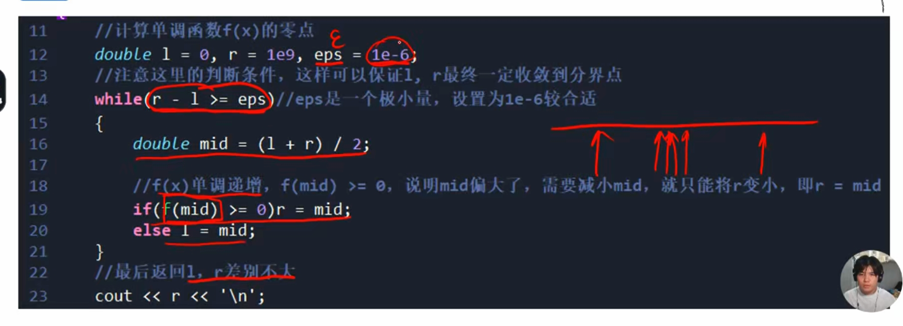
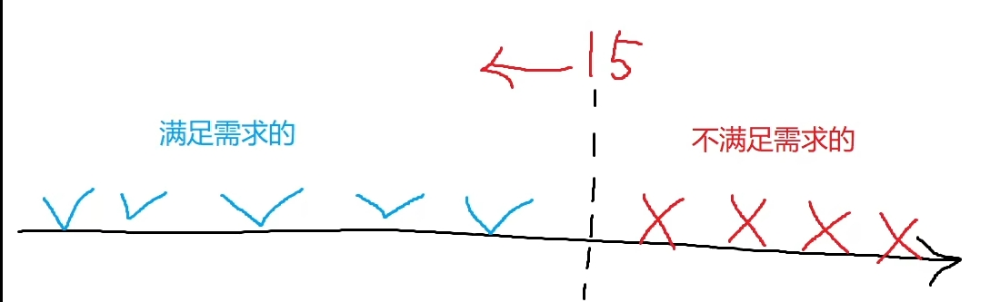

🎯 核心功能 (Purpose)

整数二分 模版：
int l = -1, r = n; // 永远指向两端外部！绝不出错！
while (l + 1 != r) {
int mid = (l + r) / 2;
if (满足右侧条件) {
r = mid;
} else {
l = mid;
}
}
// 最后根据题意(等号在哪)输出 l 还是 r
补充：

浮点二分模版：

✍️答案二分
跳石头
#include <iostream>
#include <bits/stdc++.h>
using namespace std;
int L,N,M;
const int n =5e4+9;
int a[n];
bool check(int mid)
{
int re = 0,la = 0;
for(int i = 1;i <= N;i++)
{
if(a[i] - a[la] < mid) re++;//太短了，不合法，就不跳过去，增加移除的石头
else la = i; //合法 跳过去即可
}
if (L - a[la] < mid) re++;
return re <= M;
}
int main()
{
cin >> L >> N >> M;
for(int i = 1;i <= N;i++)
{
cin >> a[i];
}
int l = 0,r = L + 1;
for(;(l + 1) != r;)
{
int mid = (l + r) / 2;
if(check(mid)) l = mid;
else r = mid;
}
cout << l << endl;
return 0;
}苹果林
#include <iostream>
#include <bits/stdc++.h>
using namespace std;
const int N = 1e5 + 9;
int x[N];
int n,m;
int check(int mid)
{
int res = 0,lst = 0;
for(int i = 1;i <= n;i++)
{
if(lst && x[i] - x[lst] < mid) continue;
else res++,lst = i;
}
return res;
}
int main()
{
cin >> n >> m;
for(int i = 1;i <= n;i++) cin >> x[i];
sort(x+1,x+n+1);
int l = 0,r = 1e9 + 9;
while(l + 1 != r)
{
int mid =(l + r) / 2;
if(check(mid) >= m) l = mid;
else r = mid;
}
cout << l << endl;
return 0;
}4.6再次学习（系统）
U383691 数的范围
题目描述
给定一个按照升序排列的长度为 n 的整数数组，以及 q 个查询。
对于每个查询，返回一个元素 k 的起始位置和终止位置（位置从 0 开始计数）。
如果数组中不存在该元素，则返回 -1 -1。
输入格式
第一行包含整数 n 和 q ，表示数组长度和询问个数。
第二行包含 n 个整数（均在 1∼10000 范围内），表示完整数组。
接下来 q 行，每行包含一个整数 k ，表示一个询问元素。
输出格式
共 q 行，每行包含两个整数，表示所求元素的起始位置和终止位置。
如果数组中不存在该元素，则返回 -1 -1。
输入输出样例 #1
输入 #1
6 3
1 2 2 3 3 4
3
4
5
输出 #1
3 4
5 5
-1 -1
说明/提示
数据范围
1≤n≤100000
1≤q≤10000
1≤k≤10000
#include <bits/stdc++.h>
using namespace std;
int n,q,k;;
const int N = 1e5+9;
int arr[N];
bool is_blue1(int num,int k)
{
return num < k;
}
int bin_search1(int n,int k)
{
int l = -1;int r = n;//0 开始 按题目
while(l+1 != r)
{
int mid = (r+l) / 2;
if(is_blue1(arr[mid],k)) l = mid;// 是数组中间的 mid是下标，而不是值
else r = mid;
}
if(arr[r] == k) return r;
else return -1;
}
bool is_blue2(int num,int k)
{
return num <= k;
}
int bin_search2(int n,int k)
{
int l = -1;int r = n;
while(l+1 != r)
{
int mid = (r+l) / 2;
if(is_blue2(arr[mid],k)) l = mid;
else r = mid;
}
if(arr[l] == k) return l;
else return -1;
}
int main()
{
ios::sync_with_stdio(0);cin.tie(0);cout.tie(0);
cin >> n >> q;
for(int i = 0;i < n;++i)//0 开始 按题目
{
cin >> arr[i];
}
while(q--)
{
cin >> k;
int res1 = bin_search1(n,k);
int res2 = bin_search2(n,k);
cout << res1 <<" "<< res2 <<'\n';
}
return 0;
} P2249 【深基13.例1】查找
题目描述
输入 个不超过 的单调不减的（就是后面的数字不小于前面的数字）非负整数 ，然后进行 次询问。对于每次询问，给出一个整数 ，要求输出这个数字在序列中第一次出现的编号，如果没有找到的话输出 。
输入格式
第一行 个整数 和 ，表示数字个数和询问次数。
第二行 个整数，表示这些待查询的数字。
第三行 个整数，表示询问这些数字的编号，从 开始编号。
输出格式
输出一行， 个整数，以空格隔开，表示答案。
输入输出样例 #1
输入 #1
11 3
1 3 3 3 5 7 9 11 13 15 15
1 3 6
输出 #1
1 2 -1
说明/提示
数据保证，，，
本题输入输出量较大，请使用较快的 IO 方式。
#include <bits/stdc++.h>
using namespace std;
using ll = long long;
const int N = 1e6+9;
int n,m;
int arr[N];
int bin_search(int n,int k)
{
int l = 0,r= n+1;
while(l+1 != r)
{
int mid = (l+r) / 2;
if(arr[mid] < k) l = mid;
else r = mid;
}
if(arr[r] == k && r <= n) return r; //记得查越界
else return -1;
}
int main()
{
ios::sync_with_stdio(0);cin.tie(0);cout.tie(0);
cin >> n >> m;
for(int i =1;i<=n;++i)
{
cin >> arr[i];
}
for(int i =1;i<=m;++i)
{
int q;
cin >> q;
int ans1 = bin_search(n,q);
cout << ans1 <<" \n"[i==m];
}
return 0;
}
P1102 A-B 数对
题目背景
出题是一件痛苦的事情！
相同的题目看多了也会有审美疲劳，于是我舍弃了大家所熟悉的 A+B Problem，改用 A-B 了哈哈！
题目描述
给出一串正整数数列以及一个正整数 ，要求计算出所有满足 的数对的个数（不同位置的数字一样的数对算不同的数对）。
输入格式
输入共两行。
第一行，两个正整数 。
第二行， 个正整数，作为要求处理的那串数。
输出格式
一行，表示该串正整数中包含的满足 的数对的个数。
输入输出样例 #1
输入 #1
4 1
1 1 2 3
输出 #1
3
说明/提示
对于 的数据，。
对于 的数据，，，。
2017/4/29 新添数据两组
#include <bits/stdc++.h>
using namespace std;
using ll = long long;
const int N = 2e5+9;
int arr[N];
int n,c;
ll cnt;
int bin_search1(int n,int q)
{
int l = 0,r = n+1;
while(l+1 != r)
{
int mid = l+(r-l)/2;
if(arr[mid] < q) l = mid;
else r = mid;
}
if(arr[r] == q && r <= n) return r;
else return -1;
}
int bin_search2(int n,int q)
{
int l = 0,r = n+1;
while(l+1 != r)
{
int mid = r+(l-r)/2;
if(arr[mid] <= q) l = mid;
else r = mid;
}
if(arr[l] == q && l >= 1) return l;
else return -1;
}
int main()
{
ios::sync_with_stdio(0); cin.tie(0);cout.tie(0);
cin >> n >> c;
for(int i = 1;i <= n;++i)
{
cin >> arr[i];
}
sort(arr+1,arr+n+1); // 二分 一定记得排序
for(int i = 1;i <= n;++i)
{
int A = arr [i] + c;
int res1 = bin_search1(n,A);
int res2 = bin_search2(n,A);
if(res1 != -1)
{
cnt += (res2 - res1 + 1); //别光注意到同数不同 还有其他数呢；
}
//暴力：
// for(int j = 1;j <= n;++j)
// {
// if(arr[i] - arr[j] == c) cnt++;
// }
}
cout << cnt <<'\n';
return 0;
} 二分答案 ：求最大值里的最小值”或者“求满足条件的最大的什么东西
最小值最大：

P1873 [COCI 2011/2012 #5] EKO / 砍树
题目描述
伐木工人 Mirko 需要砍 米长的木材。对 Mirko 来说这是很简单的工作，因为他有一个漂亮的新伐木机，可以如野火一般砍伐森林。不过，Mirko 只被允许砍伐一排树。
Mirko 的伐木机工作流程如下：Mirko 设置一个高度参数 （米），伐木机升起一个巨大的锯片到高度 ，并锯掉所有树比 高的部分（当然，树木不高于 米的部分保持不变）。Mirko 就得到树木被锯下的部分。例如，如果一排树的高度分别为 和 ，Mirko 把锯片升到 米的高度，切割后树木剩下的高度将是 和 ，而 Mirko 将从第 棵树得到 米，从第 棵树得到 米，共得到 米木材。
Mirko 非常关注生态保护，所以他不会砍掉过多的木材。这也是他尽可能高地设定伐木机锯片的原因。请帮助 Mirko 找到伐木机锯片的最大的整数高度 ，使得他能得到的木材至少为 米。换句话说，如果再升高 米，他将得不到 米木材。
输入格式
第 行 个整数 和 ， 表示树木的数量， 表示需要的木材总长度。
第 行 个整数表示每棵树的高度。
输出格式
个整数，表示锯片的最高高度。
输入输出样例 #1
输入 #1
4 7
20 15 10 17
输出 #1
15
输入输出样例 #2
输入 #2
5 20
4 42 40 26 46
输出 #2
36
说明/提示
对于 的测试数据，，，树的高度 ，所有树的高度总和 。
#include <bits/stdc++.h>
using namespace std;
using ll = long long;
const int N = 1e6+9;
ll n,m;
ll arr[N];
ll ans = 0;
bool check(int h)
{
ll sum = 0;
for(int i = 1; i <= n;++i)
{
sum += max((ll)0,arr[i] - h);
}
return (sum >= m);//合法 （至少）
}
int main()
{
ios::sync_with_stdio(0);cin.tie(0);cout.tie(0);
cin >> n >> m;
ll max_h = 0;
for(int i = 1;i <= n;++i)
{
cin >> arr[i];
max_h = max(max_h,arr[i]);//--i
}
sort(arr+1,arr+n+1);
// for(int i = max_h;i >= 0;--i)
// {
// ll sum = 0;
// for(int j = 1;j <= n;++j)
// {
// sum += max((ll)0,arr[j] - i);
//
// } // 每棵树能贡献多少；
// if(sum >= m) // 全算完了 结算 在每棵树算完后
// {
// ans = max((ll)i,ans);//最大
//
// }
// }
//
ll l = -1,r= max_h+1;
while(l+1 != r)
{
ll mid = l + (r-l)/2;
if(check(mid)) l = mid;
else r = mid;
}
if(l >= 0 && l <= max_h ) ans = l;
cout << ans <<'\n';
return 0;
}P2440 木材加工
题目背景
要保护环境。
题目描述
木材厂有 根原木，现在想把这些木头切割成 段长度均为 的小段木头（木头有可能有剩余）。
当然，我们希望得到的小段木头越长越好，请求出 的最大值。
木头长度的单位是 ，原木的长度都是正整数，我们要求切割得到的小段木头的长度也是正整数。
例如有两根原木长度分别为 和 ，要求切割成等长的 段，很明显能切割出来的小段木头长度最长为 。
输入格式
第一行是两个正整数 ，分别表示原木的数量，需要得到的小段的数量。
接下来 行，每行一个正整数 ，表示一根原木的长度。
输出格式
仅一行，即 的最大值。
如果连 长的小段都切不出来，输出 0。
输入输出样例 #1
输入 #1
3 7
232
124
456
输出 #1
114
说明/提示
数据规模与约定
对于 的数据，有 ，，。
#include <bits/stdc++.h>
using namespace std;
using ll = long long;
const int N = 1e5+9;
int n,k;
ll arr[N];
ll ans;
bool check(int len)
{
ll sum = 0;
for(int j = 0; j <= n ;++j)
{
sum += max((ll)0,arr[j] / len);
}
return sum >= k;
}
int main()
{
ios::sync_with_stdio(0);cin.tie(0);cout.tie(0);
cin >> n >> k;
ll max_l = 0;
ll ans = 0;
for(int i = 1;i <= n;++i)
{
cin >> arr[i];
max_l = max(max_l,arr[i]); //i--
}
int l = 0,r = max_l+1;
while(l+1 != r)
{
int mid = l + (r-l)/2 ;
if(check(mid)) l = mid;
else r = mid;
}
if(l >= 1 && l <= max_l) ans = l;
//暴力：
// for(int i = max_l;i >= 1;--i)
// {
// ll sum = 0;
// for(int j = 1;j <= n;++j)
// {
// sum += max((ll)0,arr[j] / i);
// }
// if(sum >= k)
// {
// ans = max((ll)i,ans);
// }
//
//
// }
cout << ans <<'\n';
return 0;
}